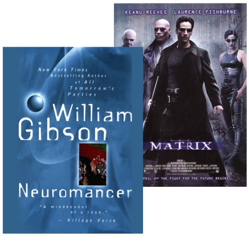
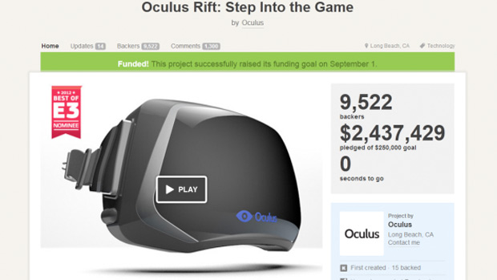
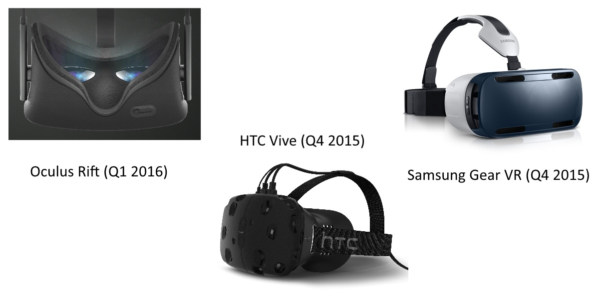
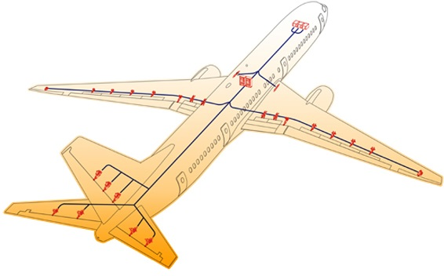
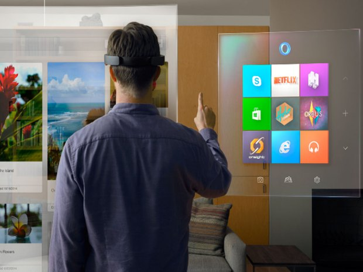

class: center, middle # Virtual Reality in Software Engineering ### (VR demo included!) Anthony Elliott* Brian Peiris Chris Parnin* .footnote[.right[*North Carolina State University, USA]] ??? - hold questions to end --- # VR: Past, Present, Future .leftColumn[  __Sci-Fi__ ] ??? - history - scifi --- # VR: Past, Present, Future .leftColumn[ __Sci-Fi__<br><br> <img src="images/sutherland-hmd.jpg" width="50%"> __1965__ ] ??? - history - activity - research and hardware - tech fail - vr dormant --- # VR: Past, Present, Future .leftColumn[ __Sci-Fi__<br><br> <img src="images/sutherland-hmd.jpg" width="50%"> __1965__ ] .rightColumn[ <img src="images/rift.jpg" width="100%"> <br> __2012__ ] ??? - present - 2012 - garage - mobile hardware - new generation - company --- # VR: Past, Present, Future .leftColumn[ __Sci-Fi__<br><br> <img src="images/sutherland-hmd.jpg" width="50%"> __1965__ ] .rightColumn[ <img src="images/rift.jpg" width="100%"> <br> __2012__<br>  ] ??? - kickstarter --- # VR: Past, Present, Future .leftColumn[ __Sci-Fi__<br><br> <img src="images/sutherland-hmd.jpg" width="50%"> __1965__ ] .rightColumn[ <img src="images/rift.jpg" width="100%"> <br> __2012__<br> ] ??? - facebook --- # VR: Past, Present, Future <img src="images/facebook.png" width="10%" style="padding-left: 6em;"> <img src="images/microsoft.jpg" width="30%"> <img src="images/google.png" width="25%" style="position:relative; top: 1em;"> <img src="images/sony.jpg" width="25%" style="position:relative; top: -0.3em;"> <img src="images/htc.png" width="25%" style="position:relative; left: 1em; top: 1.5em;"> ??? - present - spreading - giants --- # VR: Past, Present, Future .bottom[  ] ??? - consumer --- # Demo - Programming is limited ??? Show demo without VR - intro - rise - example - simple demo - file management - dev env - files - depth - application - 2nd problem - rotate - depth - feedback - flocking - cycle - vr --- # Demo - Virtual reality can help ??? Show demo of VR livecoding - explain devices - inside world - depth - body movement - editors - one per file - remove unneeded editors - fix bug: separation to 0.01 - hand gestures - more coding: returnToOrigin --- name: improves # VR improves on ??? - Look at abstract concepts --- # VR improves on - Spatial Cognition <img src="images/data-mountain.jpg" align="right"> ### VR provides: - stereoscopic vision -> depth - head rotation -- ### Effect - activates *place cells* - should improve memory, attention, and cognition (Parnin 2012) --- # VR improves on - Manipulation and motion .leftColumn[ ### VR provides: - direct manipulation - walking ] .rightColumn[ <img src="images/hand-large.png" width="100%"><br> <img src="images/cyberith.jpg" width="50%"> ] ??? --- # VR improves on - Manipulation and motion .leftColumn[ ### VR provides: - direct manipulation - walking ### Effect - improve perception and retention (Noyes, 2008) - Walking stimulates creativity (Oppezzo, 2014) - improves sensation of depth (Held, 1963) ] .rightColumn[ <img src="images/hand-large.png" width="100%"><br> <img src="images/cyberith.jpg" width="50%"> ] --- # VR improves on - Feedback ### VR provides: - Overcoming the *Gulf of Evaluation* (Norman, 1988) - VR makes it easier to see what's going on <img src="images/feedback-loop.png" width="60%" align="right"> -- ### Effect - Increased productivity --- # How can VR help developers? .leftColumn[ - Debugging ] .rightColumn[ <img src="images/debugger-canvas.png" width="95%"> ] ??? - other applications - infinite 2d canvas - unlimited 3d space - spatial context --- # How can VR help developers? .leftColumn[ - Debugging - Simulation ] .rightColumn[ <img src="images/debugger-canvas.png" width="95%">  ] ??? - sim useful combined with VR - boeing aircraft line - debug in mini sim - commands in circuts - larger-than-life --- # How can VR help developers? .leftColumn[ - Debugging - Simulation - Visualization ] .rightColumn[ <img src="images/debugger-canvas.png" width="95%"> ] ??? - without 3d analogue - visualize code - dependency tree - commit history --- # How researchers can help ??? We showed some specific SE applications, here are a couple research questions. -- .leftColumn[ <br> 1) Immersive visual programming language ] .rightColumn[ <img src="images/scratch.jpg" width="95%"> ] ??? - how use 3rd dimension? - novices learn - professionals use? --- # How researchers can help .leftColumn[ 1) Immersive visual programming language .bottom[ 2) Immersion vs physical interaction ]] .rightColumn[ <img src="images/scratch.jpg" width="95%"> <img src="images/hololens.jpg" width="95%"> ] ??? - when is full VR useful? - when is AR useful? --- # Recap .leftColumn[ - commodity hardware - current development limitations - VR can improve - Spatial cognition - Manipulation and motion - Feedback <br> Poster: Thursday 4 - 5:30 pm .bottom[Anthony Elliott (@anthonyE_vr) | Brian Peiris (@brianpeiris)] ] .rightColumn[ <img src="images/riftsketch.png" width="95%" style="height: 20em;"> ] ??? - poster - questions? --- # VR development resources .leftColumn[ - Unity Game Engine - Microsoft HoloLens - WebVR in Firefox and Chrome ] .rightColumn[  ] ??? - tools - unity - games - unity free, easy, integration - hololens - windows 10 - augmented reality - webvr - browser in dev - data + webgl - demo chrome + firefox